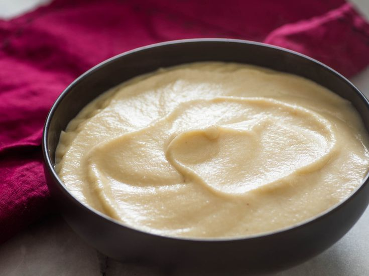

Cauliflower Puree

This delicious little number will get all your guests talking!
Anyone can make this recipe at home, you will need some sort of blending device though.
This will go well with red meat or seafood.
Ingredients
- 1 finely chopped onion
- 1 chopped cauliflower
- 1 teaspoon of crushed garlic
- 1 and a 1/2 cups of cream
- 50 grams of butter
- Salt and pepper to taste
Steps
- Start by sweating finely chopped onion and garlic on low heat until soft.
- Add your cream and cauliflower and bring to medium heat and cook.
- Once cauliflower has softened (around 15 minutes), add butter and blitz until smooth.
- Add salt and pepper to taste.